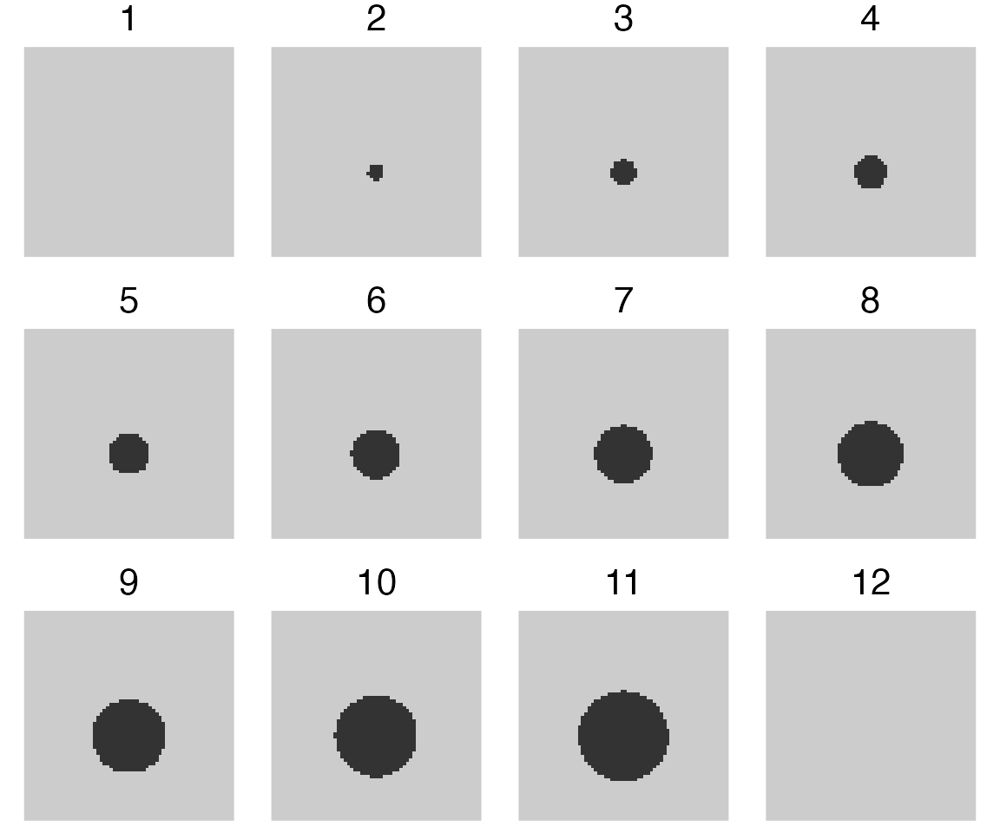
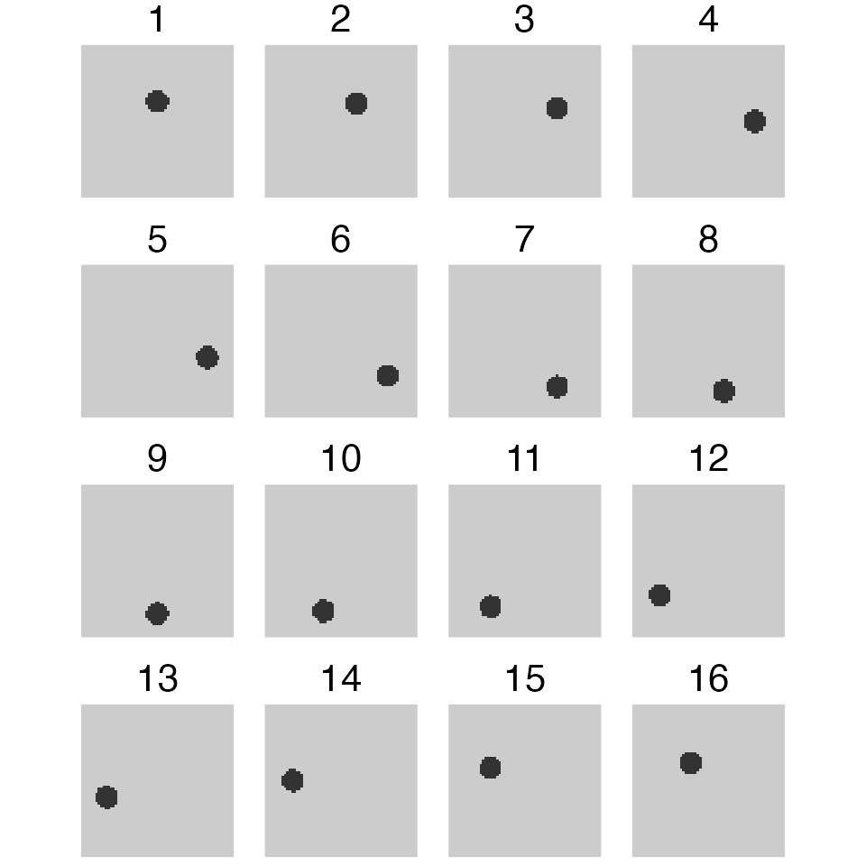
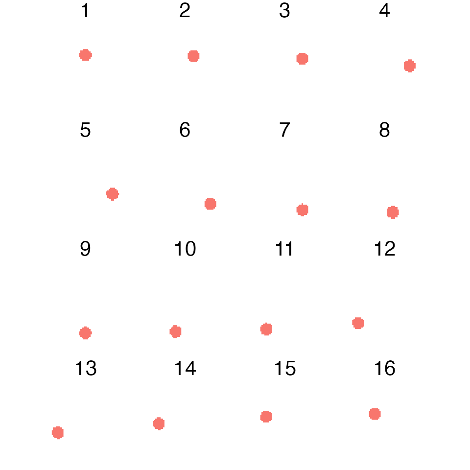
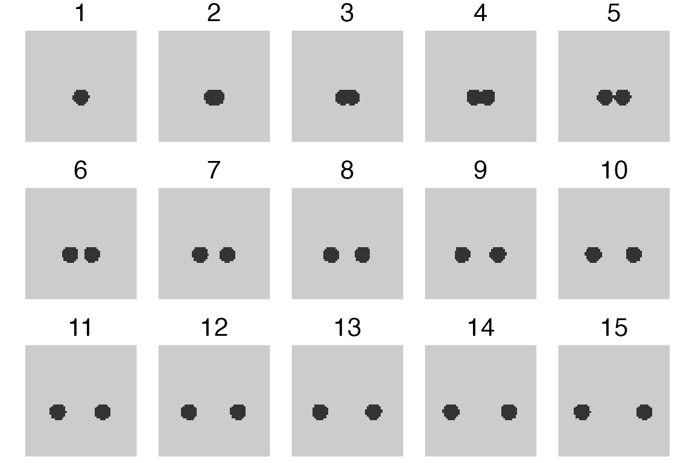
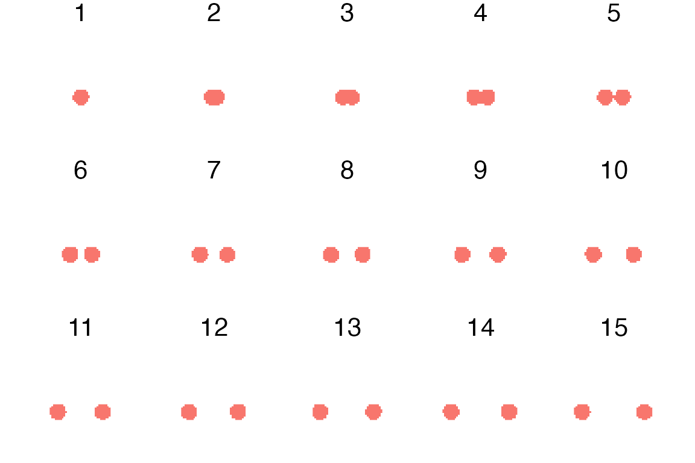
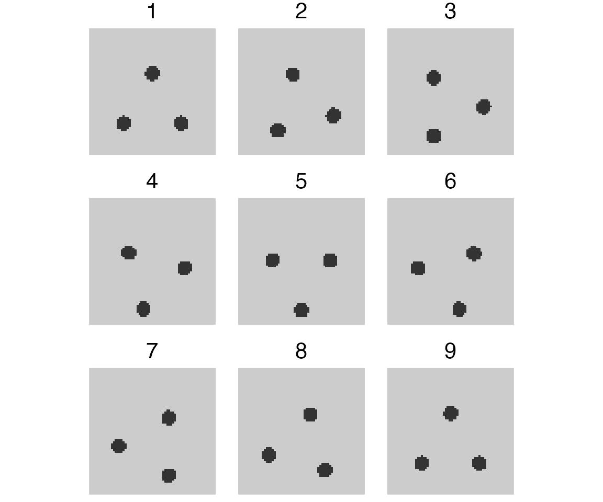
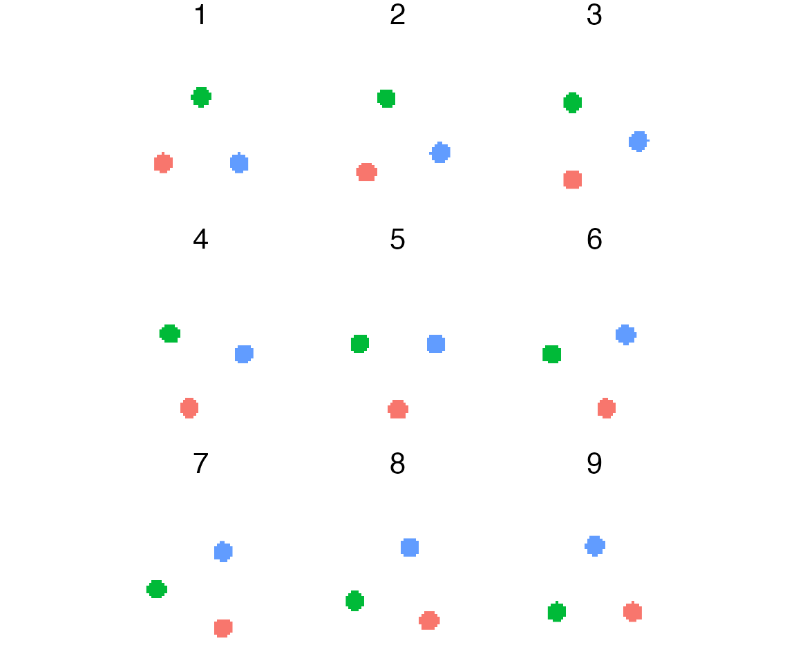
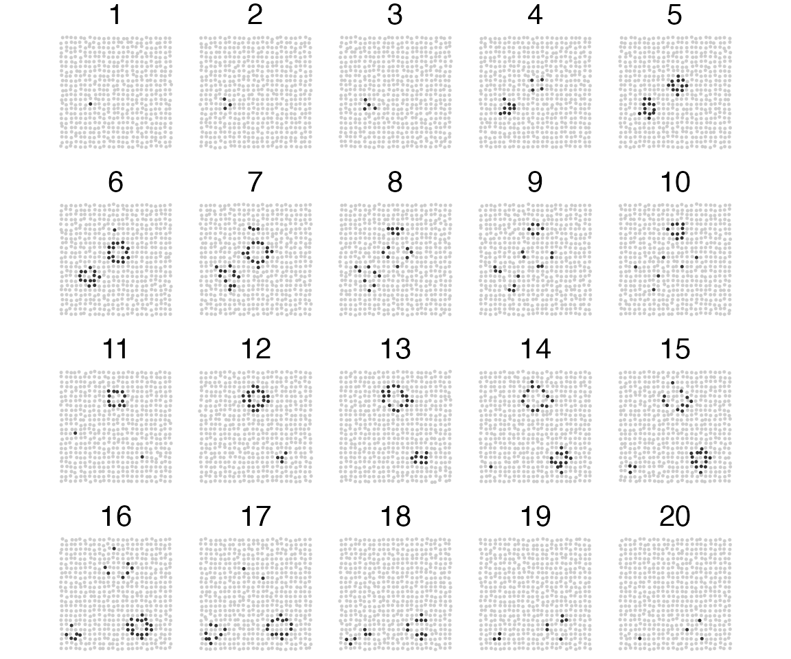
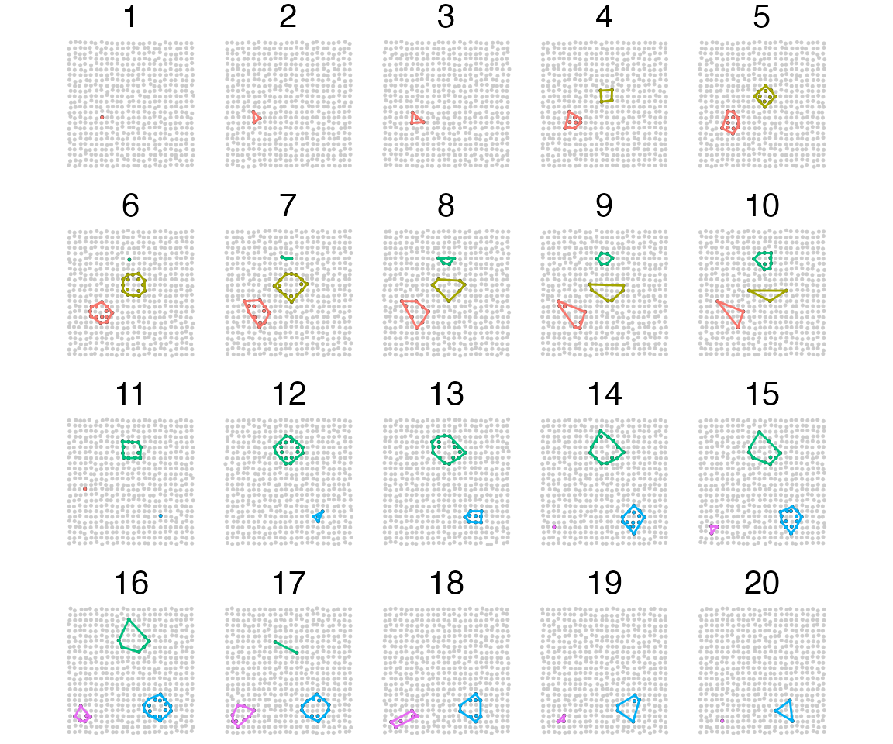

vignettes/ARCOS-synthRasterImages.Rmd
ARCOS-synthRasterImages.RmdHere we demonstrate tracking of collective events from a sequence of
binary images. Each pixel in the image is treated as a separate object,
to which an objID number is assigned. The
objID identifier is the same for objects with the same X/Y
position in subsequent frames.
Pixel values, the measurement, assume values 0 or 1, which correspond to an inactive or active object, respectively. Objects with value 1 are active and our goal is to detect and track a collective activation of all such objects in all frames of the time sequence.
Here we detect and track a concentrically growing cluster of active objects directly from a sequence of 12 binary PNG images at 64-by-64 pixel resolution.
We use the loadDataFromImages function to read data from
PNG images. The function returns an arcosTS object, which
is a data.table with additional attributes that specify
position, measurement, and object ID columns.
Since images are binary, we set the thres parameter to
-1 to load all data, zeroes and ones, without
thresholding.
dtIm = ARCOS::loadDataFromImages(file.path(system.file("testImagePatterns/concentricGrowth",
package="ARCOS"),
"png_64"),
"*.png",
thres = -1)The final long-format input data with active/inactive objects. Columns:
x and y correspond to X/Y coordinates of
an object,m contains binarised measurement \(\{0,1\}\) that corresponds to
inactive/active objects, respectively. For identification of collective
events we will only use active objects, i.e. \(m > 0\),objID holds an object identifier, which should be
at least unique within a single time frame,time indicates the time frame number.| y | x | m | IDobj | frame |
|---|---|---|---|---|
| 1 | 1 | 0 | 1 | 1 |
| 2 | 1 | 0 | 2 | 1 |
| 3 | 1 | 0 | 3 | 1 |
| 4 | 1 | 0 | 4 | 1 |
| 5 | 1 | 0 | 5 | 1 |
| 6 | 1 | 0 | 6 | 1 |
Here we plot the time sequence with a growing concentric circle. Each frame (time point) consists of a matrix of 64x64 objects, where each object can assume a value of 0 (inactive) or 1 (active). In this example objects do not change their positions or identities across frames. In general, both positions and object identifiers may change between frames.

We use the ARCOS::trackColl function to identify
collective events in frames and to link them between frames.
dtColl = ARCOS::trackColl(dtIm[m>0])The result from tracking of collective events is a long-format
data.table with columns:
time with the frame number,objID with an identifier of an object involved in a
collective event,collID with an identifier of a collective event that is
unique across the entire frame sequence.| frame | IDobj | collid.frame | collid | y | x | m |
|---|---|---|---|---|---|---|
| 2 | 1895 | 1 | 1 | 39 | 30 | 1 |
| 2 | 1957 | 1 | 1 | 37 | 31 | 1 |
| 2 | 1958 | 1 | 1 | 38 | 31 | 1 |
| 2 | 1959 | 1 | 1 | 39 | 31 | 1 |
| 2 | 1960 | 1 | 1 | 40 | 31 | 1 |
| 2 | 2021 | 1 | 1 | 37 | 32 | 1 |
Detect and track a moving cluster of active objects directly from a sequence of 16 binary PNG images at 64-by-64 pixel resolution.
dtIm = ARCOS::loadDataFromImages(file.path(system.file("testImagePatterns/movingCircle",
package="ARCOS"),
"png_64"),
"*.png",
thres = -1)
dtColl = ARCOS::trackColl(dtIm[m>0])
Detect and track a cluster of active objects that splits into two parts. Analysis directly from a sequence of 15 binary PNG images at 64-by-64 pixel resolution.
The analysis should consider everything as a single cluster even after the split.
dtIm = ARCOS::loadDataFromImages(file.path(system.file("testImagePatterns/splitCircle",
package="ARCOS"),
"png_64"),
"*.png",
thres = -1)
dtColl = ARCOS::trackColl(dtIm[m>0])
Detect and track multiple moving clusters of active objects directly from a sequence of 9 binary PNG images at 64-by-64 pixel resolution.
dtIm = ARCOS::loadDataFromImages(file.path(system.file("testImagePatterns/movingMulti",
package="ARCOS"),
"png_64"),
"*.png",
thres = -1)
dtColl = ARCOS::trackColl(dtIm[m>0])
Detect and track multiple activation sites from a sequence of 20 binary PNG images at 32-by-32 pixel resolution. Sprites created with Piskel web-app. Small random Gaussian noise added to X/Y positions.
dtIm = ARCOS::loadDataFromImages(file.path(system.file("testImagePatterns/4events",
package="ARCOS"),
"png_32"),
"*.png",
thres = -1)
# add Gaussian noise to X/Y
# Change the seed to explore other configurations
set.seed(7)
dtIm[,
`:=`(x = x + rnorm(.N, 0, .1),
y = y + rnorm(.N, 0, .1))]
dtColl = ARCOS::trackColl(dtIm[m > 0], eps = 2.5)
# Create convex hulls around collective events fro visualisation
dtCollCH = dtColl[,
.SD[grDevices::chull(x, y)],
by = .(frame,
collid)]#> Warning: Using `size` aesthetic for lines was deprecated in ggplot2 3.4.0.
#> ℹ Please use `linewidth` instead.